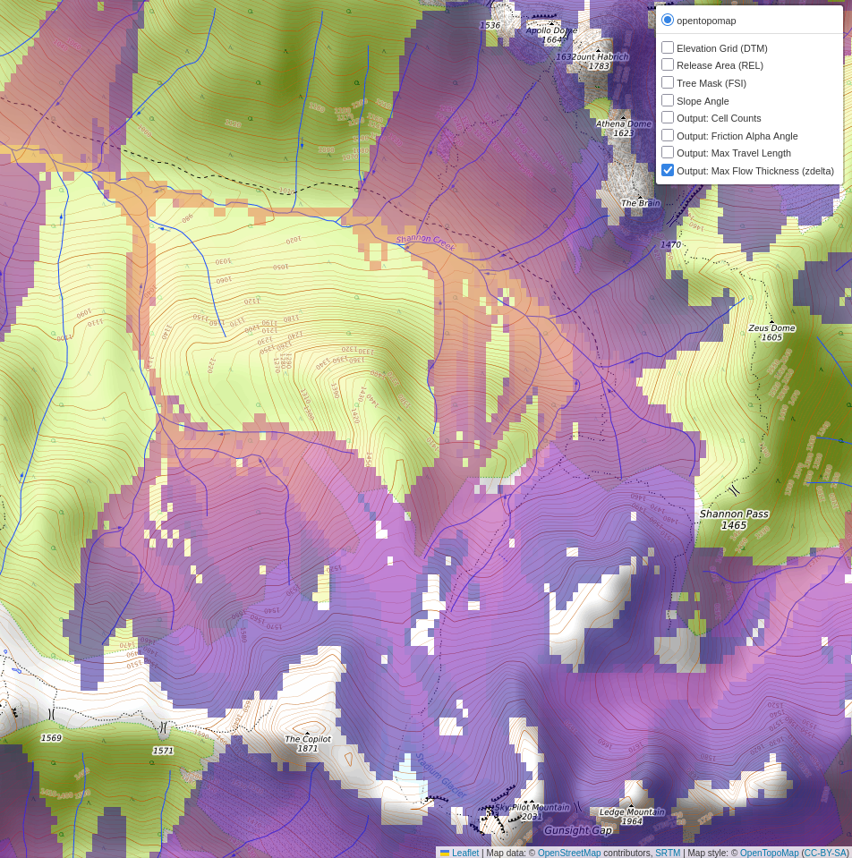

avalayers
avalayers is a user interface for preparing, simulating, and visualizing avalanche flow dynamics using the FlowPy (AvaFrame) engine.

Key Features
- Automated Data Processing: Download and merge 30m resolution DTM/DSM tiles across custom bounding boxes.
- Dynamic Terrain Analysis: Calculate Canopy Height Models (CHM) and normalize them into Forest Structure Information (FSI) layers.
- Interactive Start-Zone Tuning: Refine avalanche release zones in real-time via a command-line interface and topographical map previews.
- Integrated Dashboard: Generate interactive, browser-based dashboards with toggleable layers.
- 3D Export: One-click generation of KMZ files for visualization in Google Earth Pro.
Installation
This project uses uv for dependency management.
# Clone the repository
git clone <repo-url>
cd avylayers
# Create environment and install dependencies
uv sync
Quick Start
1. Acquire Elevation Data
Download tiles for your region of interest (e.g., Sky Pilot, BC).
2. Prepare Simulation Project
Generate the DTM, FSI, and Release Area masks.
uv run -m avalayers prepare \
--dtm data/dems/fabdem_dtm_-123.1488_49.6315_-123.0692_49.6684.tif \
--dsm data/dems/copernicus_glo30_dsm_-123.1488_49.6315_-123.0692_49.6684.tif \
--out MySimulation
Scientific Documentation
For detailed more information on options and usage, please refer to the User Guide.
License
GPL-3.0